PUBLICATIONS
Publications on Google Scholar.Published Papers:
- THz Coupling in Carbon Nanotube Sensors Modulates Their Fluorescence.
S. S. Nalige, P. Galonska, Kelich, P.,L. Sistemich, C. Herrmann, L. Vukovic, S. Kruss, M. Havenith.
Nature Communication (accepted)
- Serotonin Detection with DNA-Carbon Nanotube Sensors Across Multiple Spectral Wavelengths.
Kelich, P. J. Adams, S. Jeong, N. Navarro, M. P. Landry, L. Vukovic
Journal of Chemical Information and Modeling 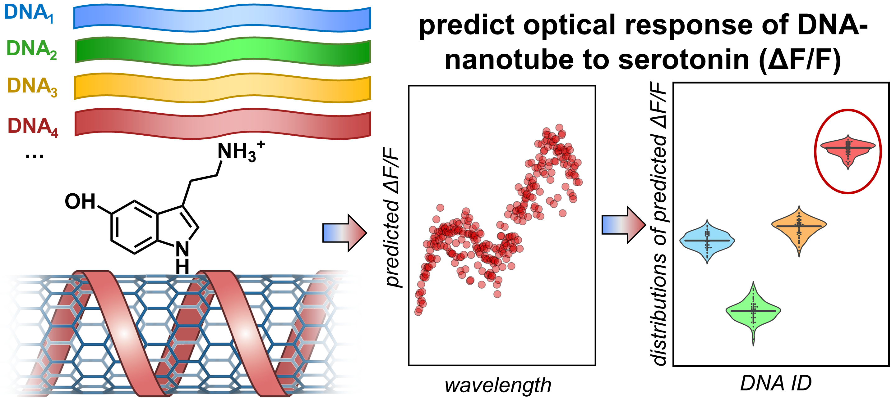
- Directed Evolution of Near-infrared Serotonin Nanosensors with Machine Learning-based Screening.
S. An, Y. Suh,Kelich, P. D. Lee, L. Vukovic, S. Jeong.
Nanomaterials 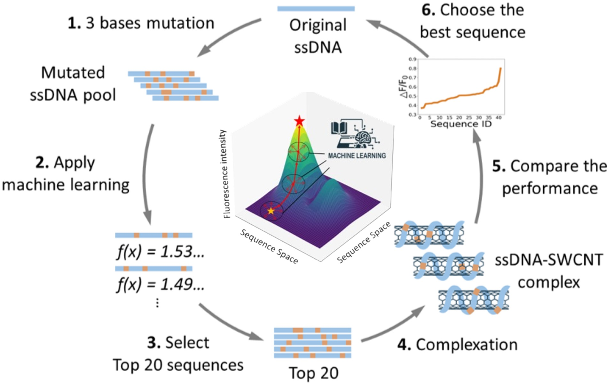
- Genetically-Encoded Discovery of Perfluoroaryl-Macrocycles that Bind to Albumin and Exhibit Extended Circulation in-vivo.
Wong, J.YK., Kirberger, S.E., Qiu, R., Ekanayake, A.I., Kelich, P., Sarkar, S., Alvizo-Paez, E.R., Miao, J., Kalhor-Monfared, S., Dwyer, J.J., Nuss, J.M., Lin, Y.S., Macauley, M.S., Vukovic, L., Pomerantz, W.CK., & Derda, R.
Nature Communication 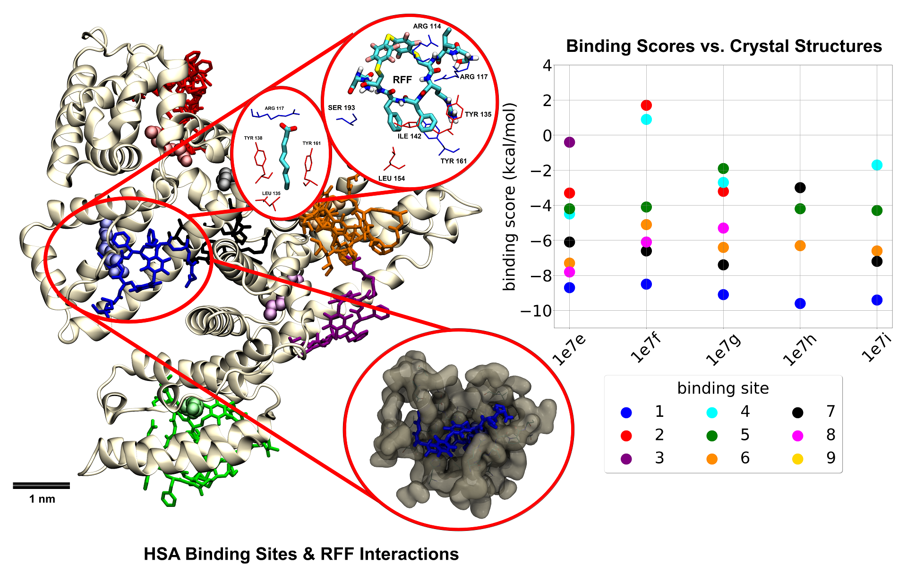
- BinderSpace: A Package for Sequence Space Analyses for Datasets of Affinity-Selected Oligonucleotides and Peptide-Based Molecules.
Kelich, P., Zhao, H., & Vukovic, L.
Journal of Computational Chemistry 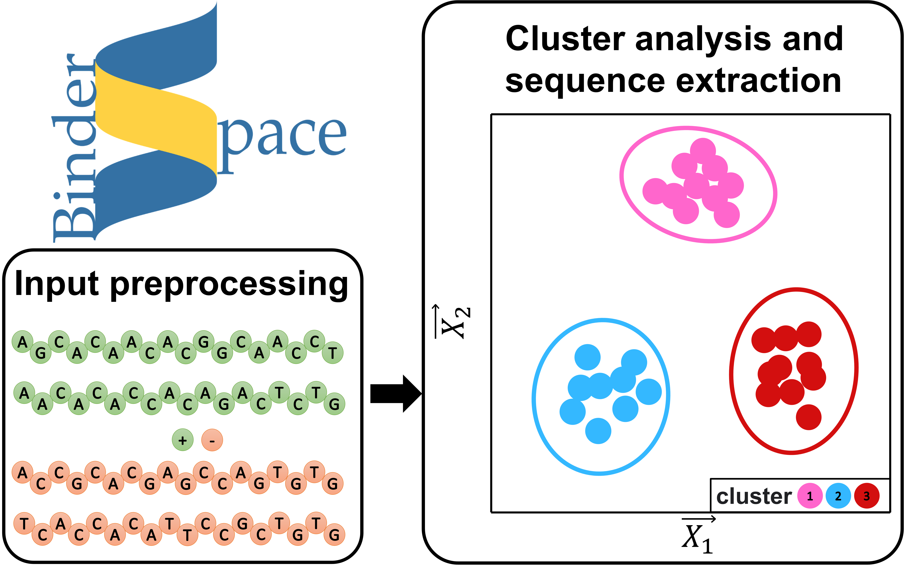
- Characterizing the Interactions of Cell Membrane-Disrupting Peptides with Lipid-Functionalized Single-Walled Carbon Nanotube Systems for Antimicrobial Discovery.
Yadav, A., Kelich, P.*, Kallmyer, N.E., Reuel, N.F., & Vukovic, L. (* co-first author)
ACS Applied Materials & Interfaces. 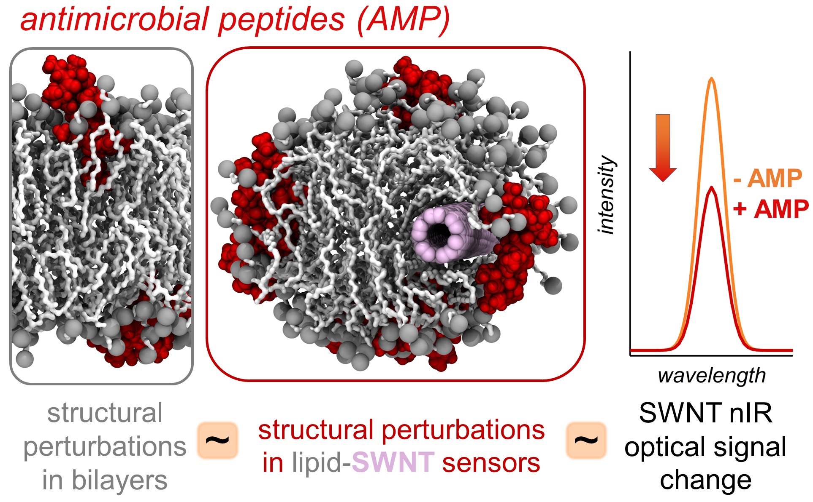
- Discovery of DNA-Carbon Nanotube Sensors for Serotonin with Machine Learning and Near-infrared Fluorescence Spectroscopy
Kelich, P., Jeong, S., Navarro, N., Adams, J., Sun, X., Zhao, H., Landry, M.P., & Vukovic, L.
ACS Nano 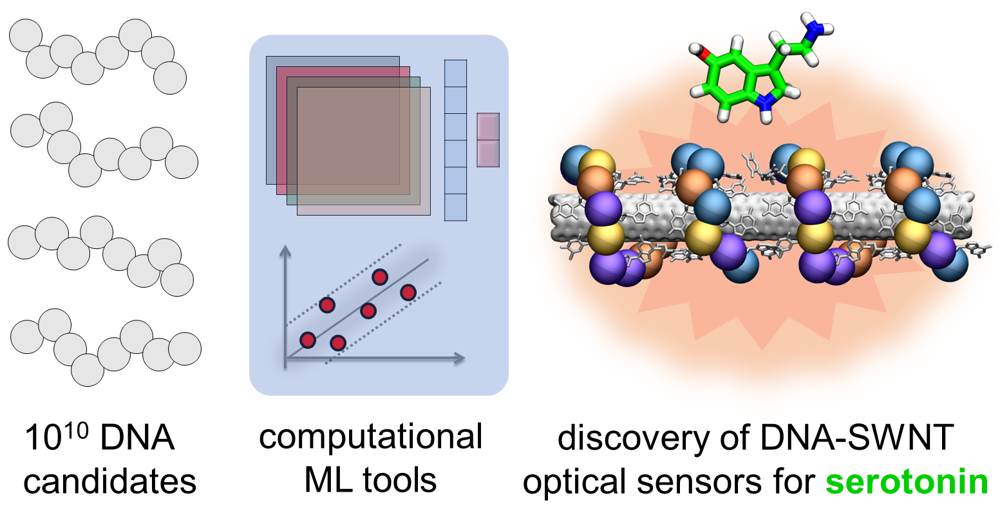
- Computational Modeling of the Virucidal Inhibition Mechanism for Broad-Spectrum Antiviral Nanoparticles and HPV16 Capsid Segments.
Chaturvedi, P., Kelich, P., Nikita, T.A., & Vukovic, L.
The Journal of Physical Chemistry B 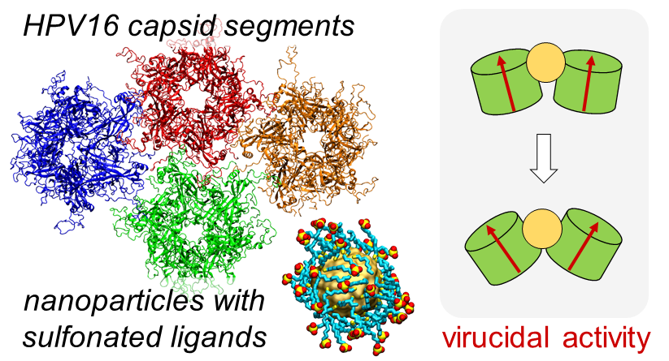
- Genetically Encoded Fragment-Based Discovery from Phage-Displayed Macrocyclic Libraries with Genetically Encoded Unnatural Pharmacophores.
Ekanayake, A.I., Sobze, L., Kelich, P., Youk, J., Bennett, N.J., Mukherjee, R., Bhardwaj, A., Wuest, F., & Vukovic, L., Derda, R.
Journal of the American Chemical Society 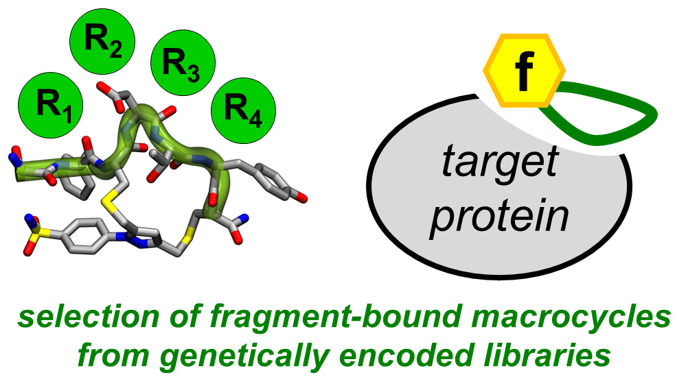
- Molecular simulation study on brushes of poly (2-ethyl-2-oxazoline).
Kelich, P., & Asadinezhad, A.
Materials Today Communications. 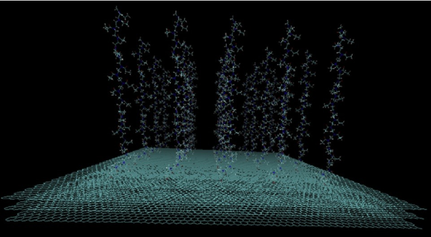
- Effects of Carbon nanofiller Characteristics on PTT Chain Conformation and Dynamics: A Computational Study.
Asadinezhad, A., & Kelich, P.
Applied Surface Science. 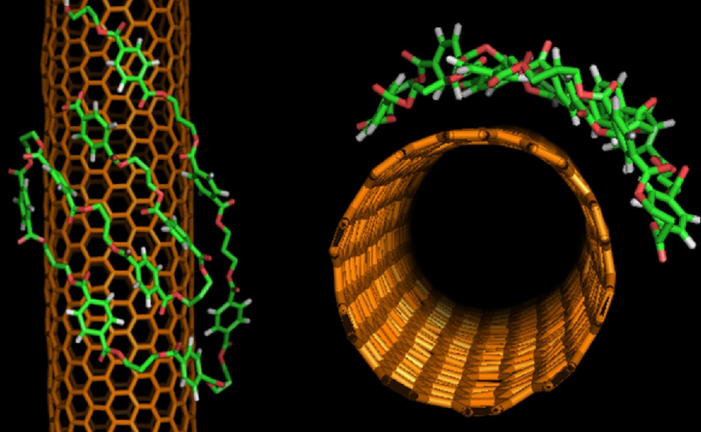
- Adsorption of Poly(Ethylene Succinate) Chain onto Graphene Nanosheets: A Molecular Simulation".
Kelich, P., & Asadinezhad, A.
Journal of Molecular Graphics and Modelling 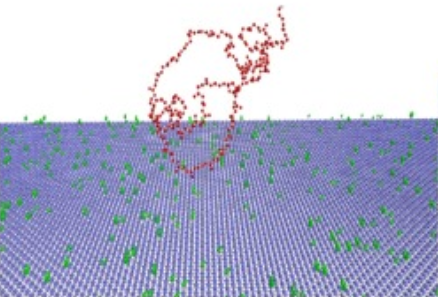
- Molecular Dynamics Insights into Behavior of Poly(ethylene succinate) Single Chain on Carbon Nanotube Surface".
Kelich, P., & Asadinezhad, A.
The Journal of Physical Chemistry C 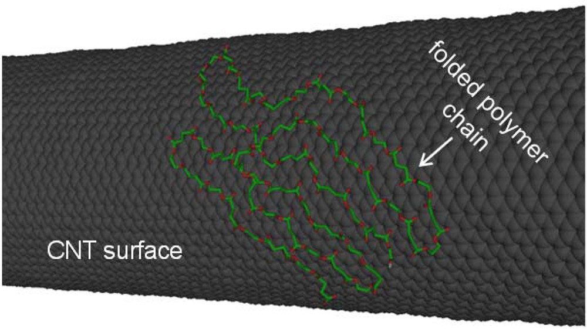
Papers in preparation:
- Discovery of DNA-Carbon Nanotube Sensors for Oxytocin Detection Through Machine Learning, Generative Models, and Near-Infrared Fluorescence Spectroscopy
Kelich, P., J. Adams, M.P. Landry, L. Vukovic. - Machine Learning Models for Predicting the Subcellular Localization of Small Molecules
Kelich, P., A. Yadav, Md Nurunnabi, L. Vukovic.